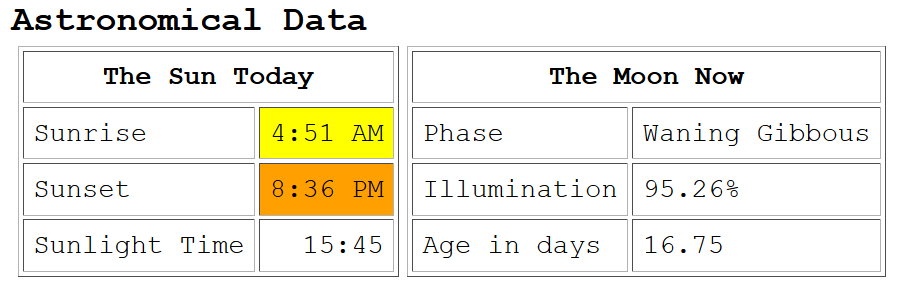

<!-- MHonArc v2.6.19+ -->
<!--X-Subject: Re: [NCDXC Chat] A harbinger of things to come? -->
<!--X-From-R13: Dvpx @Y7W &#60;evpx.ax7vNtznvy.pbz> -->
<!--X-Date: Mon, 31 May 2021 16:28:58 &#45;0500 -->
<!--X-Message-Id: 4b12644f&#45;b00b&#45;50fb&#45;c6ec&#45;0fe2279ea5d1@gmail.com -->
<!--X-Content-Type: multipart/related -->
<!--X-Reference: 0bcb01d75660$b6b40820$241c1860$@gmail.com -->
<!--X-Derived: pngGKk7KWBact.png -->
<!--X-Head-End-->
<!DOCTYPE HTML PUBLIC "-//W3C//DTD HTML 4.01 Transitional//EN"
        "http://www.w3.org/TR/html4/loose.dtd">
<html>
<head>

    <meta name="robots" content="noindex, nofollow">
<title>Re: [NCDXC Chat] A harbinger of things to come?</title>
<link rev="made" href="mailto:rick.nk7i@gmail.com">
</head>
<body>
<!--X-Body-Begin-->
<!--X-User-Header-->
<!--X-User-Header-End-->
<!--X-TopPNI-->
<hr>
[<a href="msg23322.html">Date Prev</a>][<a href="msg23324.html">Date Next</a>][<a href="msg23321.html">Thread Prev</a>][<a href="msg23322.html">Thread Next</a>][<a href="maillist.html#23323">Date Index</a>][<a href="threads.html#23323">Thread Index</a>]
<!--X-TopPNI-End-->
<!--X-MsgBody-->
<!--X-Subject-Header-Begin-->
<h1>Re: [NCDXC Chat] A harbinger of things to come?</h1>
<hr>
<!--X-Subject-Header-End-->
<!--X-Head-of-Message-->
<ul>
<li><em>To</em>: <a href="mailto:chat%40ncdxc.org">chat@ncdxc.org</a></li>
<li><em>Subject</em>: Re: [NCDXC Chat] A harbinger of things to come?</li>
<li><em>From</em>: Rick NK7I &lt;<a href="mailto:rick.nk7i%40gmail.com">rick.nk7i@gmail.com</a>&gt;</li>
<li><em>Date</em>: Mon, 31 May 2021 14:28:55 -0700</li>
<li><em>Dkim-signature</em>: v=1; a=rsa-sha256; c=relaxed/relaxed; d=gmail.com; s=20161025;	h=from:subject:to:references:message-id:date:user-agent:mime-version	:in-reply-to:content-language;	bh=CsAeEkuao2ZTuhYlYjCP1beA3PRQskhVhzTYM8sNzPQ=;	b=dUQvU8Pf+mgYC0deNNvb9lIdrkYNM6a1Ul0lGO6dpxDu90QLk79IYlZ3s9vc+kS4PK	C97evxdBAHROJKKbncxAQ1hsxhTX3the8rJEdpJVMi50d6DbLkvqvbqzpM2ztU9tB8eg	5DDndOMwzGc9lRftKzQMabWPUcddxDmBeFhAZBDnxyS9hrR/jG7KBxN5ORAI76Z9rt4l	Y1d3y06mp4crID24MB+waJ/bHFDqabrg6hJQczt+QzUz3/PRcqkQJYMkb76CZx9X3hb8	8rsZsx8Ha8Xn/Q4RNuKTjjiHkEktdxOWfvacuMW/TF8zmlfn0Nt1MwkOhzfESNn44lqQ	HnNA==</li>
<li><em>In-reply-to</em>: &lt;0bcb01d75660$b6b40820$241c1860$@gmail.com&gt;</li>
<li><em>List-archive</em>: &lt;<a href="http://mail.ncdxc.org/mailman/private/chat_ncdxc.org/">http://mail.ncdxc.org/mailman/private/chat_ncdxc.org/</a>&gt;</li>
<li><em>List-help</em>: &lt;<a href="mailto:chat-request@ncdxc.org?subject=help">mailto:chat-request@ncdxc.org?subject=help</a>&gt;</li>
<li><em>List-id</em>: NCDXC Discussion List &lt;chat.ncdxc.org&gt;</li>
<li><em>List-post</em>: &lt;<a href="mailto:chat@ncdxc.org">mailto:chat@ncdxc.org</a>&gt;</li>
<li><em>List-subscribe</em>: &lt;<a href="http://mail.ncdxc.org/mailman/listinfo/chat_ncdxc.org">http://mail.ncdxc.org/mailman/listinfo/chat_ncdxc.org</a>&gt;,	&lt;<a href="mailto:chat-request@ncdxc.org?subject=subscribe">mailto:chat-request@ncdxc.org?subject=subscribe</a>&gt;</li>
<li><em>List-unsubscribe</em>: &lt;<a href="http://mail.ncdxc.org/mailman/options/chat_ncdxc.org">http://mail.ncdxc.org/mailman/options/chat_ncdxc.org</a>&gt;,	&lt;<a href="mailto:chat-request@ncdxc.org?subject=unsubscribe">mailto:chat-request@ncdxc.org?subject=unsubscribe</a>&gt;</li>
<li><em>References</em>: &lt;0bcb01d75660$b6b40820$241c1860$@gmail.com&gt;</li>
<li><em>User-agent</em>: Mozilla/5.0 (Windows NT 10.0; Win64; x64; rv:78.0) Gecko/20100101	Thunderbird/78.10.1</li>
</ul>
<!--X-Head-of-Message-End-->
<!--X-Head-Body-Sep-Begin-->
<hr>
<!--X-Head-Body-Sep-End-->
<!--X-Body-of-Message-->

  
  
    <p>There is always hope.&#xA0; ;-)<br>
    </p>
    <p>A couple weeks ago, a late evening (well after dark, even up
      here) supplied a 12 and 15M opening into SE Asia (Malaysia, S
      China, I'd have to check the logs) for a few hours.&#xA0; It was well
      attended, lol.</p>
    <p>So hope it's a harbinger of better days on the higher bands.&#xA0;
      (Would that 6M be as open as it was in the 80's too!).</p>
    <p>Note:&#xA0; Dark doesn't happen until at least an hour after sunset
      here (not like the instant OFF switch in Arizona, lol).&#xA0; Soon
      it'll get dark around 11:30 PM with the dawn starting around 3
      AM.&#xA0; You learn to sleep through it if you want the windows open.</p>
    <p><br>
    </p>
    <p></p>
    <p>73,<br>
      Rick NK7I</p>
    <p><br>
    </p>
    <p><br>
    </p>
    <div class="moz-cite-prefix">On 5/31/2021 2:05 PM, Mike Flowers via
      Chat wrote:<br>
    </div>
    <blockquote type="cite"
      cite="">
      
      
      
      <div class="WordSection1">
        <p class="MsoNormal">R6AZ on 21.075 in FT8 at 2021-05-31
          20:48:00Z (UA: European Russia)<o:p></o:p></p>
        <p class="MsoNormal"><o:p>&#xA0;</o:p></p>
        <p class="MsoNormal">Oleg is in Krasnodar, Russia, near the
          Black Sea and he was -13 to me 15M FT8.&#xA0; He was in total
          darkness.&#xA0; 3 minutes later he was gone.<o:p></o:p></p>
        <p class="MsoNormal"><o:p>&#xA0;</o:p></p>
        <p class="MsoNormal">I think 15M might be waking up &#x2026; ;&gt;)<o:p></o:p></p>
        <p class="MsoNormal"><o:p>&#xA0;</o:p></p>
        <p class="MsoNormal"><o:p>&#xA0;</o:p></p>
        <div>
          <p class="MsoNormal"><b><span style="color:#0070C0">- 73 and
                good DX de Mike, <a rel="nofollow" href="http://www.qrz.com/db/k6mkf/"
                  moz-do-not-send="true"><span style="color:#0070C0">K6MKF</span></a>,
                <a rel="nofollow" href="https://www.ncdxc.org/" moz-do-not-send="true">NCDXC</a>
                Secretary<o:p></o:p></span></b></p>
        </div>
        <p class="MsoNormal"><o:p>&#xA0;</o:p></p>
      </div>
      <br>
      <fieldset class="mimeAttachmentHeader"></fieldset>
      <pre class="moz-quote-pre" wrap="">_______________________________________________
Chat mailing list
<a rel="nofollow" class="moz-txt-link-abbreviated" href="mailto:Chat@ncdxc.org">Chat@ncdxc.org</a>
<a rel="nofollow" class="moz-txt-link-freetext" href="http://mail.ncdxc.org/mailman/listinfo/chat_ncdxc.org">http://mail.ncdxc.org/mailman/listinfo/chat_ncdxc.org</a>
</pre>
    </blockquote>
  


<!--X-Body-of-Message-End-->
<!--X-MsgBody-End-->
<!--X-Follow-Ups-->
<hr>
<!--X-Follow-Ups-End-->
<!--X-References-->
<ul><li><strong>References</strong>:
<ul>
<li><strong><a name="23321" href="msg23321.html">[NCDXC Chat] A harbinger of things to come?</a></strong>
<ul><li><em>From:</em> &quot;Mike Flowers&quot; &lt;mike.flowers@gmail.com&gt;</li></ul></li>
</ul></li></ul>
<!--X-References-End-->
<!--X-BotPNI-->
<ul>
<li>Prev by Date:
<strong><a href="msg23322.html">[NCDXC Chat] DX SPOT: TC1919ATA on 18100.0 in FT8 at 05/31/2021 2112Z (TA: Turkey)</a></strong>
</li>
<li>Next by Date:
<strong><a href="msg23324.html">[NCDXC Chat] 6M WOW time!</a></strong>
</li>
<li>Previous by thread:
<strong><a href="msg23321.html">[NCDXC Chat] A harbinger of things to come?</a></strong>
</li>
<li>Next by thread:
<strong><a href="msg23322.html">[NCDXC Chat] DX SPOT: TC1919ATA on 18100.0 in FT8 at 05/31/2021 2112Z (TA: Turkey)</a></strong>
</li>
<li>Index(es):
<ul>
<li><a href="maillist.html#23323"><strong>Date</strong></a></li>
<li><a href="threads.html#23323"><strong>Thread</strong></a></li>
</ul>
</li>
</ul>

<!--X-BotPNI-End-->
<!--X-User-Footer-->
<!--X-User-Footer-End-->
</body>
</html>
